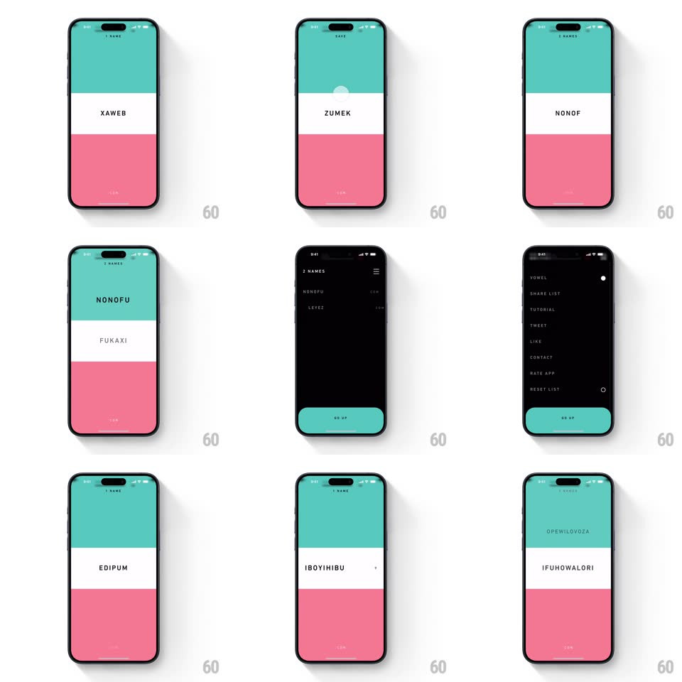

Media
Frame-by-frame

Rebuild this interaction 1:1: Nominazer's name generator - a three-band screen (teal top, white middle, pink bottom) shows a generated name in spaced caps; swipe up to save it into the teal band, swipe down to discard into pink, with snappy letter-by-letter typing for each new name and slide-out deletions in the saved list.

Rebuild this interaction 1:1: Nominazer's name generator - a three-band screen (teal top, white middle, pink bottom) shows a generated name in spaced caps; swipe up to save it into the teal band, swipe down to discard into pink, with snappy letter-by-letter typing for each new name and slide-out deletions in the saved list.
## Integration
Integration: stack-agnostic spec - springs given as stiffness/damping, timed motions as duration + curve; map every value to your framework and animation library of choice.
## Scene
Full-screen three horizontal bands: teal (save zone) on top, white middle carrying the name (LEYEZ, XAWEB, ZUMEKE...), pink (discard zone) bottom. Header counts saved names ("NO NAMES" -> "2 NAMES"). A dark overlay menu (VOWEL, SHARE LIST, TUTORIAL...) with a teal GO UP button.
## Motion spec
Pattern: vertical swipe-to-sort with typewriter reveal.
- Each new name types in letter by letter (~60ms per letter, monospace-style spacing), with a tiny pop per glyph.
- Drag vertically: the name card follows the finger 1:1, the white band stretching like taffy toward the dragged edge; tilt the name ±4deg with direction.
- Release upward past 25%: the name flies up off-screen (accelerating, 250ms) with a haptic, the teal band flashes brighter (200ms), the header count ticks up with a roll, and the next name types in.
- Release downward: same into the pink band (discard) - no count change.
- Release below threshold: name springs back to center (spring ~350/24, ~300ms).
- Saved list: rows slide out sideways on delete (250ms, slight rotation) and collapse the gap (200ms).
- Menu overlay slides up over the bands (spring ~300/26, ~350ms); GO UP returns.
## Calibration
- Bands are the targets: the dragged name should visually "pour" toward teal or pink as you approach the threshold.
- Typing speed is fast but readable - whole name lands in under 500ms.
## Reduced motion
Names crossfade; swipes become button-less fades after flick detection.
## Don't miss
- Palette is fixed and bold: teal / white / pink, black letterspaced caps.
- The header counter is the only persistent UI on the main screen.